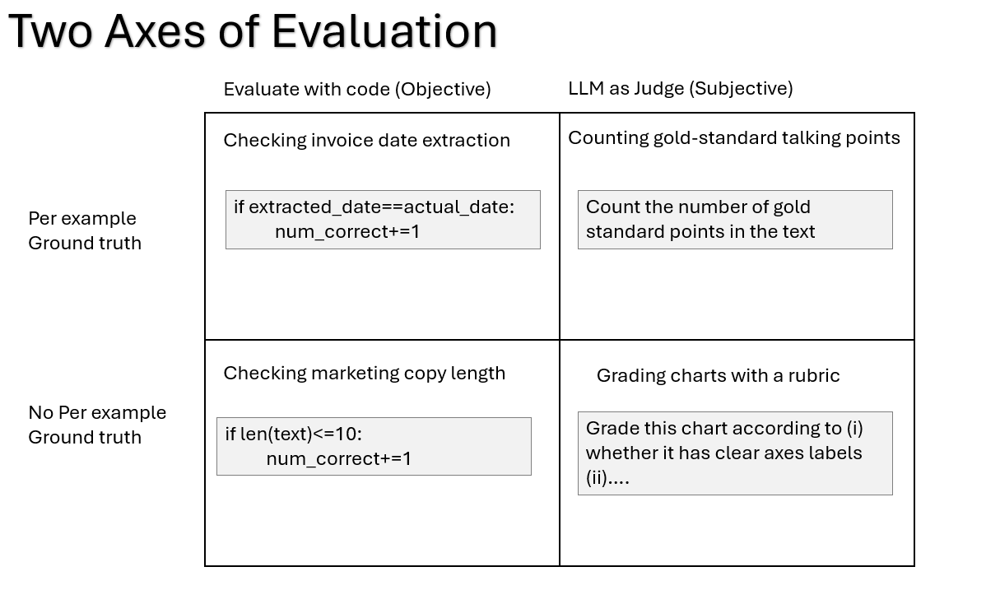

Module 4 — Episode 1
Training:Agentic AI Training
🎯 Learning Objectives
By the end of this episode, you will be able to:
- ✅ Design and implement evaluation (eval) sets for agentic AI workflows
- ✅ Differentiate between objective and subjective evals, and when to use each
- ✅ Use evals to iteratively improve system performance and guide development focus
🧭 Overview
This episode introduces the concept of evaluations (evals) — systematic methods for measuring and improving the performance of agentic AI workflows.
You’ll learn how to identify failure modes in prototype systems, design simple yet effective evals, and use them to prioritize improvements.
These practices are essential for scaling and maintaining AI workflows that behave reliably in production environments.
🧱 Prerequisites
Readers should already understand:
- Basic prompt engineering and LLM-based workflow design
- How agentic AI systems process tasks end-to-end
- Familiarity with Python scripting for data handling and evaluation
🔑 Core Concepts
- Eval (Evaluation): A structured test or metric that measures how well an AI system performs on a specific task or criterion.
- Per-example Ground Truth: A reference or “correct” output for each test input, used for objective comparisons.
- LLM-as-a-Judge: A method where a large language model evaluates outputs based on subjective criteria or rubrics.
- Objective vs. Subjective Evals: Objective evals rely on deterministic matching (e.g., string equality), while subjective evals use reasoning or judgment (e.g., quality of writing).
- End-to-End Eval: A holistic test covering the entire workflow — from input prompt to final output.
🖼 Visual Explanation
 Caption:This grid illustrates the four major categories of evaluations used in agentic AI workflows, helping developers choose appropriate evaluation strategies for their use cases.
⚙️ Technical Breakdown
How It Works
1. Prototype your system quickly.Build a minimal version of your workflow to observe real outputs and identify common errors.
2. Manually inspect outputs.Review a small set (10–20 examples) to detect failure patterns — e.g., wrong date extraction or excessive text length.
3. Design an eval.Create a small evaluation dataset and define what “correct” means for each case.
4. Automate evaluation.Write scripts or prompts to compute metrics (accuracy, word count, rubric score, etc.).
5. Iterate and refine.Use eval results to guide prompt tuning, algorithm changes, or data improvements.
Why It Works
- Empirical grounding: Real data reveals actual failure modes instead of theoretical ones.
- Focused improvement: Evals help you concentrate effort where it matters most.
- Quantitative progress tracking: Metrics provide objective evidence of improvement.
- Iterative refinement: Evals evolve alongside your system, improving accuracy and alignment over time.
When To Use It
✅ Ideal Scenarios- After building an initial prototype to identify weak points
- When tracking progress on specific sub-tasks (e.g., accuracy, length, relevance)
- To compare multiple versions of a workflow or prompt
- Running evals before having a working baseline
- Using overly complex evals too early
- Ignoring qualitative human review in early iterations
Trade-offs & Limitations
- Setup Cost: Even small evals require some manual annotation.
- Coverage: Small datasets may not represent all edge cases.
- Subjectivity: LLM-as-a-judge evals can vary with model behavior.
- Maintenance: Eval sets must evolve with the product and user expectations.
Performance Considerations
- Automation: Automate eval runs as part of CI/CD to track regressions.
- Sampling: Use stratified sampling to ensure representative test coverage.
- Scaling: As datasets grow, parallelize eval execution or use batch API calls.
- Caching: Cache model responses to avoid unnecessary recomputation.
💻 Code Examples
Minimal Example — Objective Eval for Invoice Due Date
import re
from datetime import datetime
def extract_due_date(llm_output: str) -> str:
"""Extract YYYY-MM-DD formatted date from LLM output."""
match = re.search(r"\d{4}-\d{2}-\d{2}", llm_output)
return match.group(0) if match else None
def evaluate_due_dates(predictions, ground_truths):
correct = 0
for pred, truth in zip(predictions, ground_truths):
if extract_due_date(pred) == truth:
correct += 1
return correct / len(ground_truths)
# Example usage
preds = ["Due date: 2025-08-20", "Due date: 2025-09-01"]
truths = ["2025-08-20", "2025-08-30"]
accuracy = evaluate_due_dates(preds, truths)
print(f"Due Date Accuracy: {accuracy:.2%}")
Minimal Example — Objective Eval for Caption Length
def evaluate_caption_length(captions, max_words=10):
within_limit = sum(len(caption.split()) <= max_words for caption in captions)
return within_limit / len(captions)
captions = [
"Stylish sunglasses for every sunny day.",
"A perfect blend of comfort and design for your lifestyle."
]
score = evaluate_caption_length(captions)
print(f"Length Compliance: {score:.2%}")
Example — Subjective Eval Using LLM-as-a-Judge
judge_prompt = """
You are an evaluator. Given an essay and a list of key points,
return how many of those points are covered (0–5) and explain your reasoning.
Essay: {essay}
Key Points: {points}
"""
# Pseudocode for LLM-as-a-Judge
response = llm.evaluate(prompt=judge_prompt.format(essay=essay_text, points=gold_points))
score = response.json()["score"]
🧩 Summary
Evals are the backbone of iterative improvement in agentic AI systems.
They help you measure, compare, and prioritize — ensuring development time is spent where it yields the most impact.
Start small, automate early, and evolve your evals alongside your workflows.
🚀 Next Steps
In the next episode, we’ll explore how to use evals not only to measure performance but also to pinpoint which components of an agentic system deserve the most optimization effort.